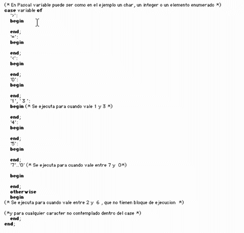

En este momento debemos tener instalado en nuestra computadora una versión
de Squeak y una leve idea de cómo se opera en este entorno.
Debiéramos, por lo tanto , poeseer una carpeta donde están grabados
al menos cuatro archivos denominados Squeakxxx.eee donde las xxx corresponden
a la versión y las eee son las extensiones de estos archivos.
.image es la imagen del sistema
.sources son los fuentes del sistema.
.changes son los cambios hechos al sistema
.exe (en el caso de Windows) es la máquina virtual.
No modificar bajo ningún concepto estos archivos y guardar una copia
de respaldo en caso de problemas.
Para que nuestro sistema “sepa” hacer algo distinto al instante inicial,
debemos agregar clases y mensajes.
Repasemos un poco de las estructuras utilizadas en otros lenguajes y como implementarlas
en Squeak
Ejercicios recolectados de innumerables fuentes, probados en Squeak 3.0
Transcript clear. "Esta orden escrita en el Workspace
limpia la ventana Transcript"
Como ejecutar un código. Se selecciona el código deseado (funciona
en cualquier ventana dentro de Squeak, por el momento hacerlo en el Workspace)
y con el menú contextual elejir do it o hacer Alt D. En adelante cada
vez que vean en algo que les mande Ejecutar hagan esto.
Escribir lo siguiente en el Workspace.
|anArray anIndex aValue |
aValue := 2.
anArray := Array new: 10.
1 to: 10 do:
[:index |
anArray at: index put: (aValue * index)].
anIndex := 1.
[anIndex < anArray size] whileTrue:
[Transcript show: 'El contenido de la casilla ',(anIndex printString),' es ',
(anArray at: anIndex) printString ; cr.
anIndex := anIndex + 1.].
Ejecutar
En la primera línea se definen variables temporarias (que son objetos,
recordar TODO ES UN OBJETO )
En la segunda se manda el mensaje 2 al objeto aValue
En la tercera se define un arreglo con diez posiciones
En la cuarta se definen los límites para los que se va a hacer (do:)
una acción.
Todo lo que está contendido dentro de dos corchetes es un bloque (block)
[ comienza bloque . Los estructurados piensen en un begin de pascal.
] fin de bloque - Los estructurados piensen en un end de pascal.
:index | es la variable interna del bloque , puede haber mas de una o ninguna.
anArray at: index put: (aValue * index)]. se coloca un valor en una posición
del arreglo
Como la sentencia tiene punto final , esto completa las instrucciones que comenzaron
en la cuarta línea.
[anIndex < anArray size] whileTrue: Aquí el bloque controla la ejecución
de la estructura de repetición.
Las estructuras elementales y ejemplos de uso
do:
El metodo do: evalua el block para cada miembro de la colección.
Por ejemplo para capturar el contenido de un arreglo durante la ejecución
del programa, podemos convertir cada miembro a una cadena y sacarlo por el Transcript
anArray do: [ :anElement |
Transcript show: (anElement printString); cr ].
Hacer el siguiente ejemplo
'Esta es una cadena' do: [ :index |
Transcript show: (index printString); cr ].
'Esta es una cadena' do: [ :index |
Transcript show: (index asString); cr ].
select:
Para filtrar una colección y finalizar con el subset deseado, use select:
.
Cada miembro de la colección que satisface la condición de bloque
se almacena en una nueva colección del mismo tipo , que es devuelta por
el método. El ejemplo cuenta la cantidad de 'a' en una string colocando
cada 'a' en una nueva colección y luego encontrando el tamaño.
Fijarse como se le mandan muchos mensajes show: al Transcript separandolos por
';'
|cadena|
Transcript clear.
cadena _'Esta es una cadena'.
Transcript show:cadena; show: ' que tiene '; show: (cadena select: [ :eachChar
| eachChar == $a ] ) size; show: ' letras a '.
reject:
Hace exactamente lo contrario que select:
|cadena|
Transcript clear.
cadena _'Esta es una cadena'.
Transcript show:cadena; show: ' que tiene '; show: (cadena reject: [ :eachChar
| eachChar == $a ] ) size; show: ' letras que no son a '.
detect:
Este mensaje devuelve el primer elemento del receptor para el cual el bloque
es evaluado a true evaluado por ejemplo si seleccionamos en el workspace y hacemos
print it
#( 4 7 10 3 7) detect: [ :each | each > 7]
mostrará 10.
collect:
El método collect: realiza una transformación en cada elemento
de
la colección y retorna una nueva colección que contiene los objetos
transformados . Por ejemplo para pasar una cadena a mayúscula.
|cadena CADENA|
Transcript clear.
cadena _'Esta es una cadena'.
CADENA := cadena collect: [ :each | each asUppercase].
Transcript show: (cadena, ' ', CADENA).
Métodos de control
ifTrue: Si la expresión anterior es verdadera se ejecuta el bloque
argumento
ifFalse: Si la expresión anterior es falsa se ejecuta el bloque
argumento
ifTrue: ifFalse: Si la expresión anterior es verdadera se ejecuta
el primer bloque en caso contrario el segundo bloque.
ifFalse: ifTrue: Verifica primero la condicion falsa .
whileTrue: Repite el bloque argumento hasta que el bloque receptor sea
falso
whileFalse: Repite el bloque argumento hasta que el bloque receptor sea
verdadero
Más sobre colecciones por Andrés Otaduy
Y ahora combinemos lo aprendido
Escribir en wl Workspace y ejecutar
|linea cadena indice |
Transcript clear.
frecuencia _ Array new: 26.
linea _FillInTheBlank request: ' Introduzca una linea' initialAnswer: ''.
1 to: 26 do: [:i| frecuencia at: i put: 0].
1 to: linea size do:
[:i|
cadena _ (linea at: i) asLowercase.
cadena isLetter
ifTrue:[
indice _ cadena asciiValue - $a asciiValue + 1.
frecuencia at: indice
put: (frecuencia at: indice) + 1
]
].
Transcript show: frecuencia.
|miCadena ind c letra|
miCadena _ 'Ya es la hora'.
ind _ 1.
(miCadena size) timesRepeat:
[c _ miCadena at: ind.
(c isVowel)
ifTrue:[letra _ c asUppercase]
ifFalse: [letra _ c asLowercase].
miCadena at: ind put:letra.
ind _ ind +1].
Transcript show: miCadena.
Sentencia de selección múltiple
En Pascal tenemos el case cuya implementación completa es la siguiente
Dentro de
Squeak existe el método caseOf: otherwise:
Ejemplos de uso.
Agregar el siguiente método al ejercicio de las letras
Notas: el bloque de selección múltiple debe encerrarse entre llaves
y si no se usa otherwise (no es obligatorio , al igual que en Pascal) , si se
ingresa un valor sin bloque de ejecución dará error
escribircaso: linea
| letra |
1 to: linea size do:
[:i|
letra _ (linea at: i) asLowercase.
letra caseOf: {
[$a ] -> [self A].[$b ] -> [self B].
[$c ] -> [self C].
[$1] -> [self uno].
[$2] -> [self dos].
[$3] -> [self tres].
}otherwise: [Transcript open.
Transcript show: 'Ese simbolo no lo se dibujar'].
]
Ejemplo más complejo del mismo sistema
MailMessage methodsFor: 'initialize-release' stamp: 'bf 3/10/2000 10:01'!
cacheFieldsFrom: aStream andDo: aBlock
"Parse aStream to initialize myself. Also, report to aBlock like fieldsFrom:do:
does"
time _ 0.
from _ to _ cc _ subject _ ''.
self fieldsFrom: aStream do:
[:fName :fValue |
fName asLowercase caseOf: {
['date'] -> [time _ self timeFrom: fValue].
['from'] -> [from _ fValue].
['to'] -> [to isEmpty
ifTrue: [to _ fValue]
ifFalse: [to _ to , ', ' , fValue]].
['cc'] -> [cc isEmpty
ifTrue: [cc _ fValue]
ifFalse: [cc _ cc , ', ' , fValue]].
['subject'] -> [subject _ fValue]}
otherwise: [].
aBlock value: fName value: fValue].